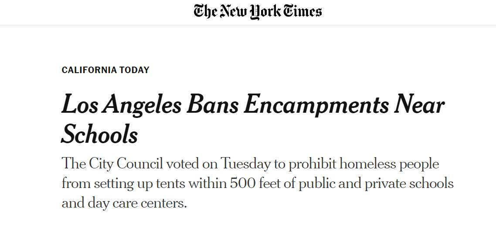

Timeline photos
There was a major homeless law change in Los Angeles yesterday where over 66,000 people live without a home.
You can now not put a tent within 500 feet of a school anywhere in LA. Overall, this will make about 20% of the land not accessible to tents. And in some areas it could be close to 50%.
I need to be clear: MY OPINIONS ARE JUST ONE ASPECT OF ALL THIS. But as a person who has "illegally" (according to the law department of Akron) sheltered 100s of homeless people over the years, I feel like I have a certain perspective on this that's interesting.
I am the triage shelter guy. I don't really care where a person can take shelter as long as they can take shelter somewhere. A drain pipe is fine with me if they are actually allowed to shelter in it.
Do we need more affordable housing. FUCK YES! There are millions of people on disability and social security who get a little over $800/month. They need housing that costs about $300/month that includes all utilities. I see no plan in place to make that meaningfully available at the scale needed in any city anywhere in America.
My focus is where a person is going to sleep tonight. We need both activists. Long-term strategies and short-term strategies.
ALL THIS IS TO SAY: I'm fine with making certain places off limits to sleep IF IF IF there is someplace else nearby to go where a person can bring their pets and their partners and a "reasonable" amount of belongings (I don't know what "reasonable" is exactly. But hoarding is a real issue in the homeless community. So it needs to be a topic that is discussed. I usually only let people have one 8 man tent and everything has to fit inside it except for a couple chairs and a bicycle.)
I don't like this whole free-range camping idea. It's chaos on so many levels. I am a huge advocate for designated camping areas. Then, sure, make every place else off limits.
But even this is going to be problematic. There are going to be people that get kicked out of one camp and then they need another camp to go to. Eventually, if a person is so problematic they need to either go to jail because they are too violent and dangerous or, ideally, they would go to a psych hospital (that no longer exists) where they could be treated for their severe mental illness.
Extremely dangerous, mentally ill people absolutely exist and need a plan in this ecosystem. But the bigger day-to-day problem is theft. There is constant theft in the homeless community by other homeless people. These people destroy an already delicate fabric of community for homeless people. Personally, my idea is to give them a 10x10 dog kennel on the outside of the fenced-in homeless camp so they can still get services and they can keep their own possessions locked up. But they are no longer easily stealing from the rest of the community. The seriously mentally ill homeless people would end up in these "units" as well because we have nothing else for them in society until they commit of very serious violent crime.
I know there are people in the homeless advocacy world that probably think this is just going to make it so cities don't actually have to provide real housing for these people. So, instead, we should do nothing until every single human gets a free house.
This plan is just not realistic. And these idealists are then using homeless people as their pawns who suffering needlessly on the streets in hopes that it will inspire politicians to act. Well guess what: they don't give a shit if people are freezing to death on their streets. They simply demonize homeless people as dangerous drug addicts (like this do to every subset of society they hate) and the general population just takes their word for it.
Am I creating slums with my plans? For sure. But you should meet people in a tent community that is well run. They have leadership roles and they are surrounded by people who understand them and treat them respectfully. These "slums" become some of the most beautiful communities I've ever had the blessing to be part of.
We need something now. My idea can happen TONIGHT. It gives people shelter and safety immediately. And how fucking dare you liberal-elitist-snobs tell poor people how they should and shouldn't live.
People usually get tired of living in a tent community and they move on. And then they go through all the complicated hoops of housing authorities to make it happen. Until then, let people make their own communities in tent villages and rebuild their lives on their own terms.